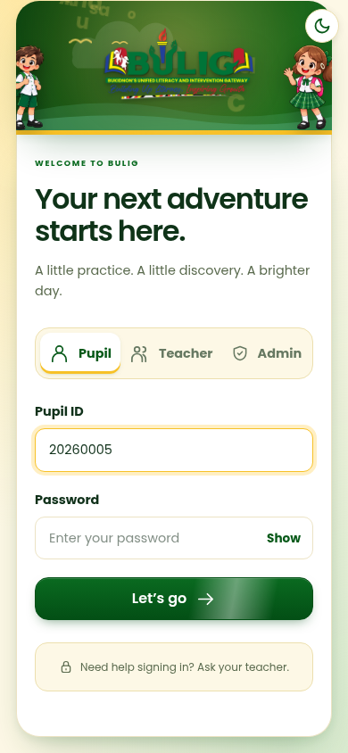
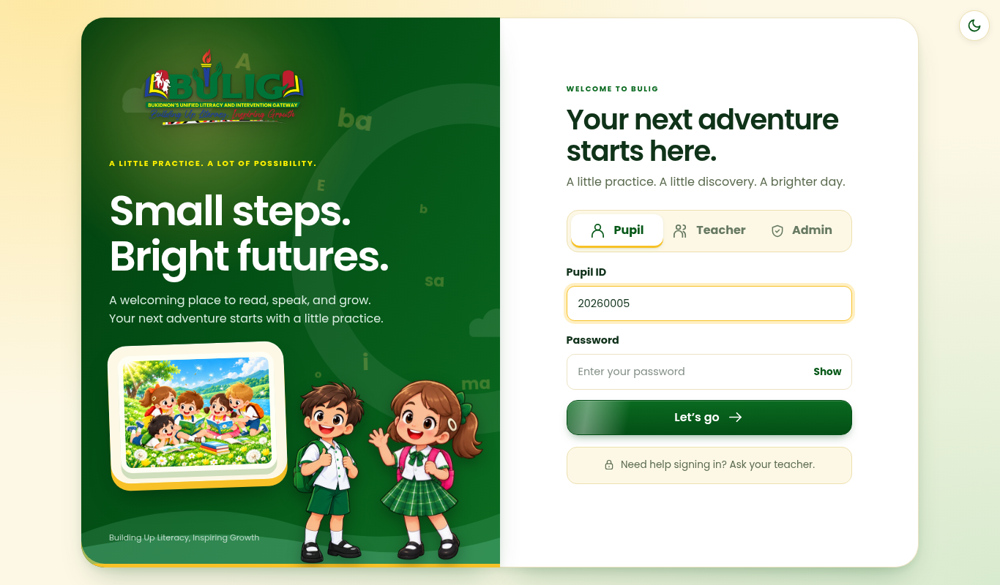
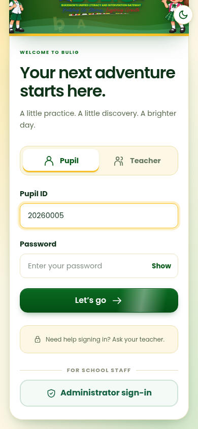
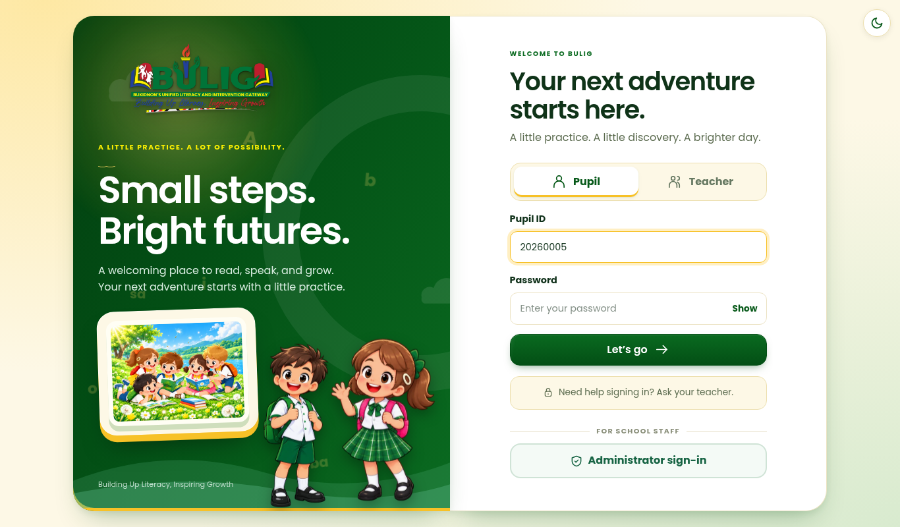
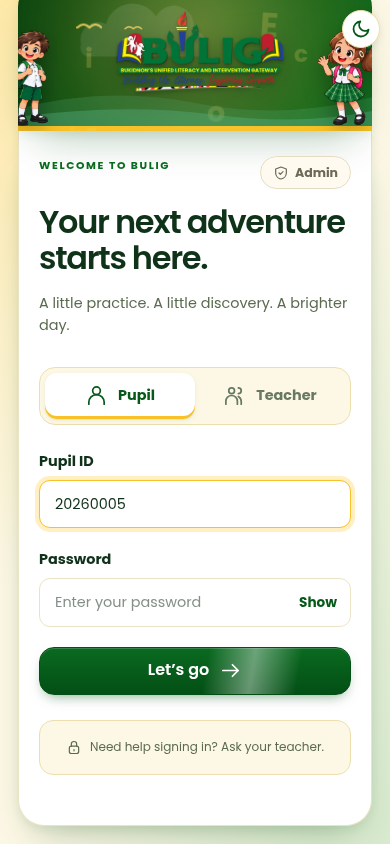
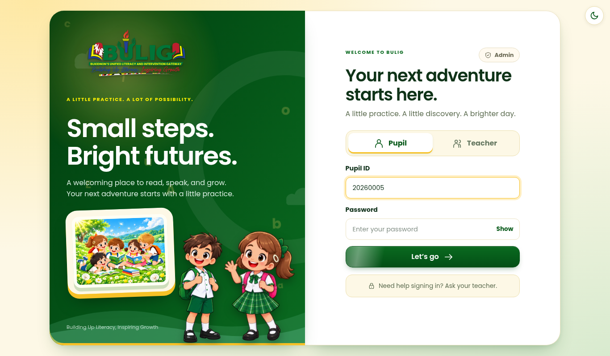
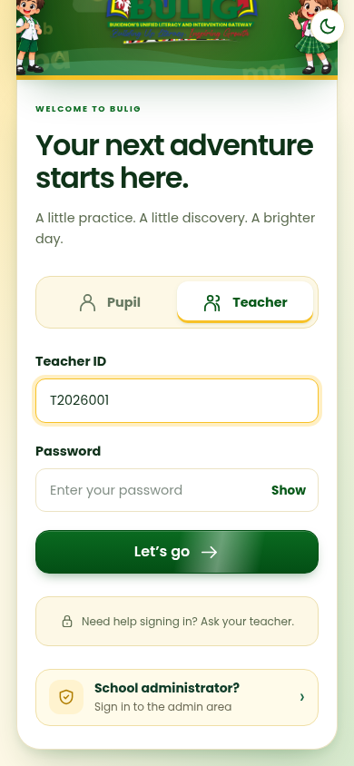
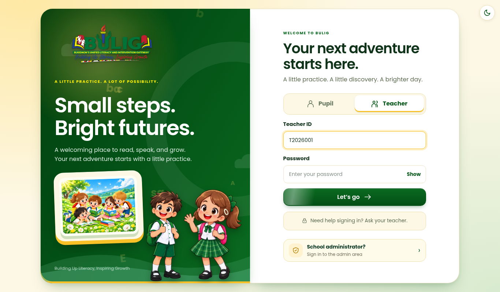

All keep admins separate. The confirm screen and the admin PIN stay the same in every option.
Pupil · Teacher · Admin, side by side. Admin works like the other two tabs.


A real button under a “For school staff” line, below the pupil sign-in. Replaces the small link.


A small pill on the “Welcome to BULIG” line, like a corner shortcut.


A “School administrator?” card that shows only when the Teacher tab is open. Pupils never see it.

